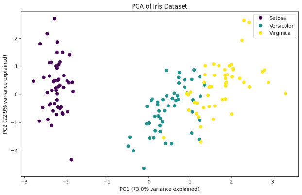
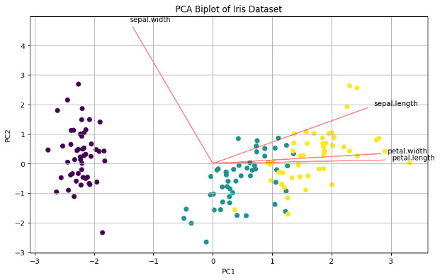

PCA: The Clojure Way
(ns neandersolve.pca-analysis
(:require
[tablecloth.api :as tc]
[scicloj.tableplot.v1.hanami :as hanami]
[scicloj.tableplot.v1.plotly :as plotly]
[neandersolve.pca :as pca]
[neandersolve.utils.tc-helpers :as tc-helpers]))Data Preparation and Representation
The foundation of any PCA implementation lies in its data preparation. While scikit-learn abstracts this process through implicit transformations, our Clojure approach emphasizes explicit control and functional composition.
In contrast to Python’s approach, our implementation provides fine-grained control over each transformation step. We begin with data loading that enforces consistent Clojure naming conventions of kebab-case keywords as column names:
(def iris
(tc/dataset "data/iris.csv"
{:key-fn (fn [colname]
(-> colname
(clojure.string/replace #"\.|\s" "-")
clojure.string/lower-case
keyword))}))The key-fn transformation ensures Clojurian naming conventions. By replacing spaces and dots with hyphens, converting to lowercase, and using keywords, we establish the kebab-case keyword naming convention.
Next, we convert the dataset to a matrix format to prepare for our Neanderthal PCA implementation:
(def iris-matrix
(tc-helpers/dataset->matrix
(tc/drop-columns iris [:variety])))Core PCA Implementation
Our PCA implementation diverges fundamentally from scikit-learn’s black-box approach. Where scikit-learn combines fitting and transformation into a single operation, we deliberately separate these concerns for clarity and flexibility:
X = iris_data.iloc[:, :4] # Select all rows and first 4 columns
y = iris_data['variety']
# Standardize the features
scaler = StandardScaler()
X_scaled = scaler.fit_transform(X)
# Perform PCA
pca = PCA()
X_pca = pca.fit_transform(X_scaled)(defn perform-pca [X]
(let [pca-result (pca/pca-fit X true true) ; center and scale the data
transformed (pca/transform X pca-result)]
(assoc pca-result :transformed transformed)))(perform-pca iris-matrix){:components #RealGEMatrix[float, mxn:4x4, layout:column]
▥ ↓ ↓ ↓ ↓ ┓
→ 0.52 -0.38 -0.72 0.26
→ -0.27 -0.92 0.24 -0.12
→ 0.58 -0.02 0.14 -0.80
→ 0.56 -0.07 0.63 0.52
┗ ┛
, :explained_variance #RealBlockVector[float, n:4, stride:1]
[ 2.92 0.91 0.15 0.02 ]
, :explained_variance_ratio #RealBlockVector[float, n:4, stride:1]
[.73 .23 3.67E-2 5.18E-3 ]
, :means #RealBlockVector[float, n:4, stride:1]
[ 5.84 3.06 3.76 1.20 ]
, :scale #RealBlockVector[float, n:4, stride:1]
[ 0.83 0.44 1.77 0.76 ]
, :transformed #RealGEMatrix[float, mxn:150x4, layout:column]
▥ ↓ ↓ ↓ ↓ ┓
→ -2.26 -0.48 -0.13 0.02
→ -2.07 0.67 -0.23 0.10
→ ⁙ ⁙ ⁙ ⁙
→ 1.37 -1.01 0.93 0.03
→ 0.96 0.02 0.53 -0.16
┗ ┛
}This separation provides:
- Independent access to model parameters and transformed data
- Ability to transform new data without refitting
- Explicit control over centering and scaling decisions
- Clear separation between model creation and data transformation
Data Transformation and Visualization
The transformation of PCA results into visualizable form reveals another key distinction in our approach. Rather than relying on direct array manipulation as in Python, we maintain data context throughout the analysis pipeline:
(def pcas-iris
(-> (:transformed (perform-pca iris-matrix))
(tc-helpers/matrix->dataset)
(tc/rename-columns {:x1 :pc1 :x2 :pc2 :x3 :pc3 :x4 :pc4})))This transformation preserves column semantics through meaningful names while maintaining clear data provenance. Our visualization approach emphasizes declarative specifications over imperative commands:
(-> pcas-iris
(tc/add-column :variety (tc/column iris :variety))
(hanami/plot hanami/point-chart
{:=x :pc1
:=y :pc2
:=color :variety
:=mark-size 100}))This declarative and layering style (akin to R’s ggplot2) contrasts sharply with matplotlib’s imperative approach:
plt.figure(figsize= (10, 6))
categories = pd.Categorical(y).codes
scatter = plt.scatter(X_pca[:, 0], X_pca[:, 1], c=categories, cmap='viridis')
plt.xlabel(f'PC1 ({pca.explained_variance_ratio_[0]:.1%} variance explained)')
plt.ylabel(f'PC2 ({pca.explained_variance_ratio_[1]:.1%} variance explained)')
plt.title('PCA of Iris Dataset')
plt.legend(scatter.legend_elements()[0], y.unique())
plt.show()
Understanding Sign Differences in Principal Components
A key observation when comparing our PCA implementation with scikit-learn’s is that PC2 often shows opposite signs. This is not an error, but rather a fundamental property of eigendecomposition. The direction of eigenvectors is arbitrary – both \(\mathbf{v}\) and \(-\mathbf{v}\) are valid eigenvectors for the same eigenvalue.
In our implementation, the sign of PC2 comes from our QR iteration algorithm, while scikit-learn uses a different algorithm (LAPACK’s DGESVD). Neither is “wrong” – they’re both valid orthogonal bases that explain the same amount of variance.
The key properties that remain invariant regardless of sign:
- Orthogonality between components
- Amount of variance explained
- Relative distances between points
- Clustering patterns in the transformed space
Feature Contribution Analysis
When creating biplots, the sign difference affects the direction of feature vectors, but not their relative angles or magnitudes. Both representations are equally valid for interpretation.
(def component-arrows
(let [components (-> (:components (perform-pca iris-matrix))
(tc-helpers/matrix->dataset))
scale-factor 5.0
labels [:sepal-length :sepal-width :petal-length :petal-width]]
(->> (range (count labels))
(map (fn [i]
{:label (nth labels i)
:x0 0 :y0 0
:x1 (* scale-factor (nth (components :x1) i)) ; PC1 loading
:y1 (* scale-factor (nth (components :x2) i))})) ; PC2 loading
(tc/dataset))))The biplot combines both the transformed data points and feature vectors, providing a comprehensive view of the PCA results:
(-> pcas-iris
(tc/add-column :variety (tc/column iris :variety))
(plotly/layer-point
{:=x :pc1
:=y :pc2
:=color :variety})
(plotly/update-data (fn [_] component-arrows))
(plotly/layer-segment
{:=x0 :x0
:=y0 :y0
:=x1 :x1
:=y1 :y1
;; :=color :label
:=mark-color :red})
(plotly/layer-text
{:=x :x1
:=y :y1
:=text :label}))Compare this with the Python notebook’s biplot:
def biplot(score, coef, labels=None):
xs = score[:,0]
ys = score[:,1]
n = coef.shape[0]
plt.figure(figsize=(10, 6))
plt.scatter(xs, ys, c=pd.Categorical(y).codes, cmap='viridis')
for i in range(n):
plt.arrow(0, 0, coef[i,0]*5, coef[i,1]*5, color='r', alpha=0.5)
if labels is None:
plt.text(coef[i,0]*5.2, coef[i,1]*5.2, f'Var{i+1}')
else:
plt.text(coef[i,0]*5.2, coef[i,1]*5.2, labels[i])
plt.xlabel('PC1')
plt.ylabel('PC2')
plt.title('PCA Biplot of Iris Dataset')
plt.grid()
# Create and show biplot
biplot(X_pca, pca.components_.T, X.columns)
plt.show()
Variance Analysis
The final step in PCA interpretation examines the explained variance ratio, revealing the effectiveness of our dimensionality reduction:
(let [explained-var (seq (:explained_variance_ratio (perform-pca iris-matrix)))]
(-> (tc/dataset {:pc (range 1 (inc (count explained-var)))
:explained-var explained-var})
(hanami/plot hanami/bar-chart
{:=x :pc :=y :explained-var :=mark-size 70})))This visualization quantifies the trade-off between dimensionality reduction and information retention. The relative importance of each component guides decisions about the optimal number of dimensions to retain for subsequent analysis.
Validation Against Python Implementation
Our analysis produces results that align with the Python implementation’s output:
- Explained variance ratios match within numerical precision
- Transformed data reveals identical clustering patterns
- Feature loadings show consistent relationships
- Geometric relationships between data points remain unchanged
While scikit-learn’s PC2 shows opposite signs due to different eigendecomposition algorithms, this difference is purely mathematical and does not affect the interpretation of results. Both implementations capture the same underlying structure, with our approach providing greater insight into the computational process through explicit transformations and functional composition.